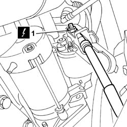
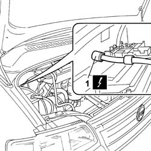

5530B26 LEAD BETWEEN BATTERY AND STARTER MOTOR - R+R
- Path
- Procedures > 55 ELECTRICAL EQUIPMENT > 5530 CURRENT GENERATOR > 5530B BATTERY AND LEADS > 5530B26 LEAD BETWEEN BATTERY AND STARTER MOTOR - R+R
- Kind
- repair procedure (removal / refitting; the operation number is the code)
- Applies to
- engines: 2.8 JTD 8V; all production periods
- Interactive page
- https://sloeber94.github.io/elrnDB-fDct/en/#/244001364
Applies to: engines: 2.8 JTD 8V; all production periods
 Removing
Removing
 Refitting
Refitting- Disconnect the negative battery terminal.
Op. 7055B54 UNDER-ENGINE GUARD - R R
See in Op. 1088B32
-
 | Description | Connector |
|---|---|---|
1 | Starter motor | A020A |

Applies to: engines: 2.8 JTD 8V; all production periods
- Lower the vehicle using the lift.
1. Disconnect the battery lead undoing the fixing nut.
| Description | Connector |
|---|---|---|
1 | Maxifuse box on battery | B099H |
- Remove the lead between the battery and the starter motor.

Applies to: engines: 2.8 JTD 8V; all production periods
Refitting
Removing- Connect the battery lead tightening the fixing nut.
| Description | Connector |
|---|---|---|
. | Maxifuse box on battery | B099H |
- Raise the vehicle using the lift.
- Connect the lead to the starter motor tightening the fixing nut.
| Description | Connector |
|---|---|---|
. | Starter motor | A020A |
See in Op. 1088B32
Op. 7055B54 UNDER-ENGINE GUARD - R R
-